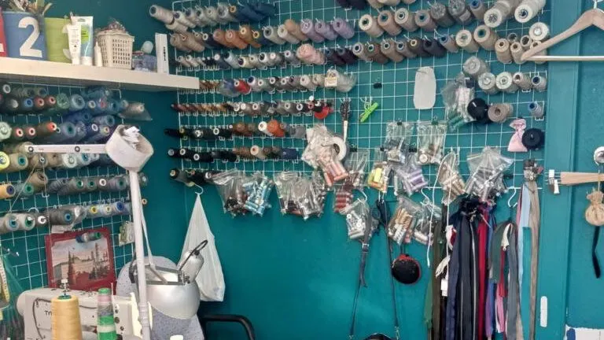
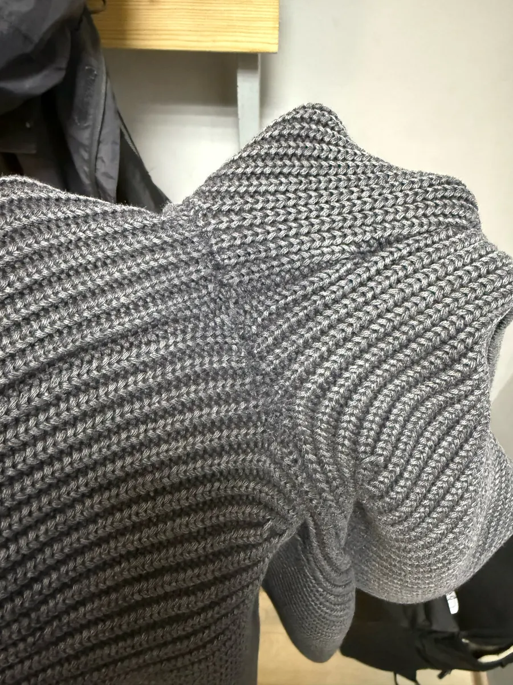
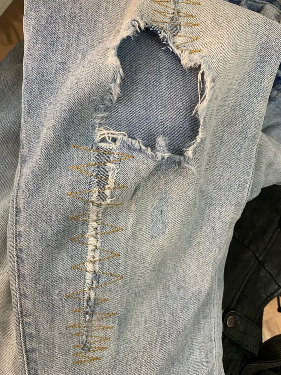
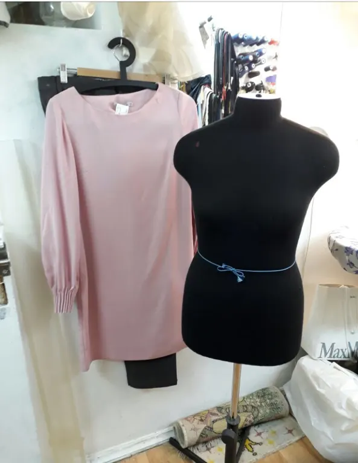

Ателье · ремонт и подгонка одежды · Китай-город
Ремонт и подгонка одежды на Маросейке
Ушить платье, заменить молнию или подкладку, зашить дырку, починить куртку и джинсы. Работаем пн-пт с 12 до 20.
- Пн-пт 12:00–20:00
- Рейтинг 4,6 на Яндекс.Картах, 40 отзывов
- Оплата наличными, предоплата и постоплата

Что делают
На карточке Яндекс.Карт цен нет. Стоимость называют по вещи; на цены есть отзыв, поэтому лучше уточнить до визита.
Ремонт
- Заменить молниюклиентка писала: «меняла молнии»уточнить
- Заменить подкладку в пальтоклиентка писала: «меняла подкладки у пальто»уточнить
- Зашить дырку на трикотажеклиент писал: «шов абсолютно незаметен»уточнить
- Починить куртку, джинсыклиенты писали про куртки и протёртые джинсыуточнить
Подгонка по фигуре
- Ушить платьев том числе нарядное, за деньуточнить
- Подшить брюки, юбкууточнить
Точную цену и срок называют при обращении, после того как мастер увидит вещь.
Как проходит
- 01
Приходите или звоните
Пн-пт с 12 до 20, Маросейка, 8, подъезд 3, кабинет 365.
- 02
Обсуждаете работу
Клиенты пишут, что мастер ищет решение, а не просто «подшивает».
- 03
Забираете готовое
В отзывах – «за день подогнала платье» и «в кратчайшие сроки».



Что пишут клиенты
Незаметный шов
Дырку на джемпере зашили так, что шов незаметен и трикотаж не стянут.
Решение, а не «подшить»
Клиент писал, что мастер нашла решение и спасла любимую куртку.
Быстро
Платье в пайетках подогнали за день, работу – «в кратчайшие сроки».
Отзывы с Яндекс.Карт
«Золотые руки, приятный человек! Ремонтирую одежду у Риммы уже несколько лет, всегда очень довольна! Ушивала тут платья, меняла молнии, меняла подкладки у пальто и многое другое. Вчера Римма за день подогнала по мне платье в пайетки на мероприятие, я в восторге, как оно теперь сидит на мне! Удачи и процветания»
Оксана Стрельцова · 6 сентября 2026
«Волшебные руки! Приносил много одежды под ремонт, впервые вижу такое качество, просто идеально, проблема многих мужчин (протираются джинсы между ног) казалось бы что там делать? Но оказывается можно сделать по разному и данный мастер Римма сделала это так хорошо что я и представить не мог, фото приложу позже. Римма у вас золотые руки! Огромное спасибо, теперь только к вам по возможности.»
Артем Гладышев · 25 июля 2026
«Обращались в ателье, чтобы зашить дырку на подмышке джемпера. Мастер Римма справилась с задачей отлично! Шов абсолютно незаметен, трикотаж не стянут. Спасибо за качественную работу! Теперь джемпер как новый»
ГЕКТОР · 22 октября 2025
Отзывы с карточки на Яндекс.Картах, без правок.
Частые вопросы
Сколько это стоит?
Цен на карточке Яндекс.Карт нет. Позвоните: +7 (968) 621-64-38 и уточните цену по вещи.
Что можно сделать?
По отзывам: ушить платья, заменить молнии и подкладки, зашить дырки, починить куртки и джинсы. На карточке также указаны пошив и подгонка.
Как оплатить?
Наличными; на карточке указаны предоплата и постоплата.
Где ателье?
Москва, ул. Маросейка, 8, подъезд 3 (бизнес-центр), кабинет 365. Работаем пн-пт с 12 до 20.
Позвоните или приходите с вещью
- Адрес
- ул. Маросейка, 8, подъезд 3, каб. 365, Москва
- Часы
- пн-пт 12:00–20:00
- Телефон
- +7 (968) 621-64-38